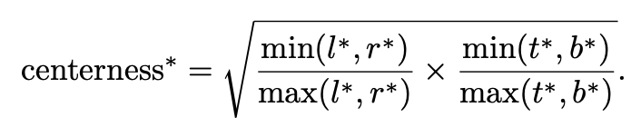

URL: https://arxiv.org/pdf/1904.01355.pdf
2019年备受推崇的一篇anchor free的论文，最后也应该中了ICCV2019，但是对于熟悉检测领域的同学来说，看到这篇论文应该略有眼熟，这篇论文其实和Densebox应该属于一脉相承，都希望利用FCN的逻辑统一检测/分割等任务。
FCOS的具体想法呢是这样的，基于FPN的结构，P3 - P7得到的feature map假设分别是Hi x Wi x Ci，那么基于H x W这么多个pixel，每个pixel都作为一个中心点去回归一个目标bbox，每个bbox的定义同样包含5个值，一个是分类score，一个是回归offset，只是这个offset的值当前这个pixel距离gt框四条边的具体(和anchor based模型一样，feature map的pixel gt的计算只需要按stride映射会原图就好)，具体的示意图如下：

几个需要注意的点:
- gt的生成，对于feature map上的某个pixel (x, y), 如果(x, y) 映射到原图的点(x‘, y‘)落在了某个gt框里，那么对应的offset就算(x‘, y‘)到gt框四条边的offset，分类gt也就沿用这个gt框的class标注。
- FPN的好处一是可以fuse feature另外一个不同的layer可以针对性的回归不同scale的框，那么在FCOS中这部分是怎么做的呢，论文将P3 - P7 5个FPN层用6个值进行区间划分 ，论文中是用的区间m = [0, 64, 128, 256, 512 , ∞]，对于一个gt: (l∗, t∗, r∗ ,b∗),如果满足
max(l∗, t∗, r∗ ,b∗) > mi or max(l∗, t∗, r∗ ,b∗) < mi - 1，那么P3 + i就会将这个gt视为negative sample，这层不负责回归这个gt框。这么做其实会有一个问题，对于靠近gt框边缘的点有可能会落到其他layer上(也就是一个gt框内所有的pixel不一定都在一个layer里)这其实在某种程度上违背了FPN的初衷，只是在具体的实现的时候似乎可以卡中心的一些ratio来人为的干掉边缘pixel。 - FPN另一个好处可以缓解一个pixel对目标回归的不确定性，比如下图，手拿网球拍的运动员，小的蓝色框的大部分pixel同时也落在来橙色的人体框中，这就导致一个问题，这些overlap的pixel具体需要负责去回归哪个框，通过FPN上述的分层处理可以大大缓解这个问题，论文的ablation里是有具体的数据的，感兴趣的同学可以参考原论文，那么假设在这样的情况下还是有少数不确定的pixel，那么这些pixel就负责回顾最小的那个框！

论文的最后一段另外还提出了center-ness loss的概念，主要是想解决在具体实验中发现的FCOS会产生大量低质量的框环绕在gt周围（应该都是gt的边缘pixel产生的），因此提出了center-ness loss的概念：

我们来看一下这个loss，l*和r*，t*和b*是两对相互关联的变量，如果某个pixel越靠近中心点(center)那么这两对值就会越接近，那么center-ness loss就会越趋向于1，如果某个pixel越远离中心点(center)，那么center-ness loss就会越趋向于0.所以可以理解为center-ness是一个度量离中心点越近的单位，inference的时候这个center-ness分支的结果会加权于score从而约束了偏离中心点的pixel，也抑制了大量低质量的框。
论文整体的内容应该就这些了，FCOS对后续的anchor free做法还是很有启发意义的。